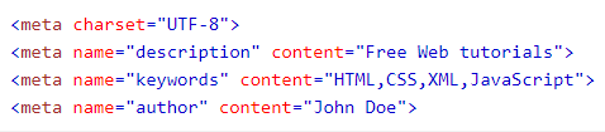

METADADOS
Metadados são dados externos à página que são usados pelos navegadores (como exibir conteúdo), pelos mecanismos de pesquisa (palavras-chave) e outros serviços da web;
Eles são integrados à página HTML pela tag <meta>
O elemento <meta> é usado para especificar qual conjunto de caracteres é usado, descrição da página, palavras-chave, autor e outros metadados.
